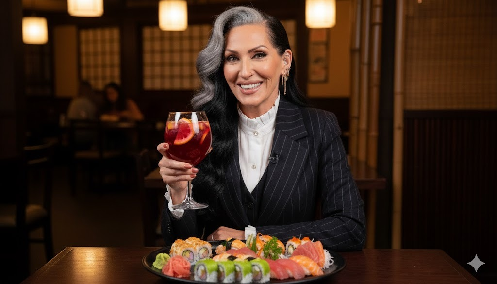
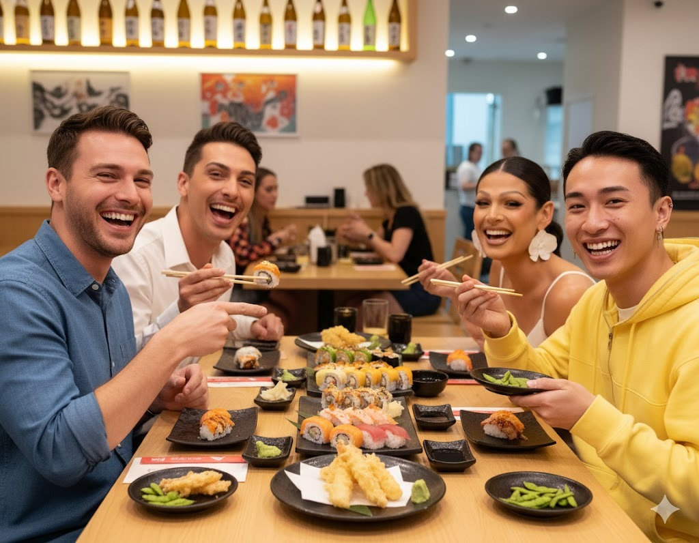

Restaurante Yumikai Sushi
Restaurante Yumikai Sushi
"El sushi es el equilibrio perfecto entre la técnica del hombre y la generosidad de la naturaleza."
Restaurante Yumikai Sushi "El sushi es el equilibrio perfecto entre la técnica del hombre y la generosidad de la naturaleza."
Creemos que el mejor sushi merece ser disfrutado en un entorno que eleve cada sentido. Nuestro local ha sido diseñado bajo un concepto de minimalismo cálido, donde la iluminación tenue y una acústica cuidadosamente estudiada permiten que la conversación fluya sin interrupciones. No es solo un restaurante, es un espacio donde la arquitectura y el diseño orgánico crean una atmósfera de exclusividad relajada.


En Yumikai Sushi, ofrecemos un espacio privado ideal para tus reuniones de negocios o encuentros sociales. Nuestro salón privado está equipado con tecnología audiovisual de última generación, perfecto para presentaciones o videoconferencias. Además, nuestro equipo de eventos se encargará de cada detalle, desde la decoración personalizada hasta un menú a medida que impresionará a tus invitados.